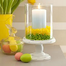
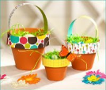

4 Simple EGG-stravagant Easter Centerpieces
Sweeten a Candle Display

From: All Your Magazine Use the abundance of jelly beans to bring some color to the table. Place a glass hurricane on a plate or pedestal. Center a pillar candle inside it. Fill the surrounding space 1" high with one color of jellybeans, then add a 1" layer of a different color directly on top.
From: All You Magazine:
Here's what you'll need:
- Two similarly shaped vases, one 3" narrower than the other
- Peeps
- Jelly beans
- Flowers
Here are the easy steps to pulling it together:
- Insert the smaller vase inside the large.
- Layer jelly beans in the space between the two.
- Arrange Peeps on top of the jelly beans.
- Arrange your flowers.
DIY Terra Cotta Easter Basket Centerpieces
From: Hostess Blog
If you're looking for a quick and easy Easter craft/centerpiece idea,these Terra Cotta "Easter Baskets" only take a few minutes and will look super cute on your Easter table! Added bonus: they're really inexpensive! All you need are small terra cotta pots in various sizes, scrapbook paper, "grass" filler, and any embellishments you want to add (optional).